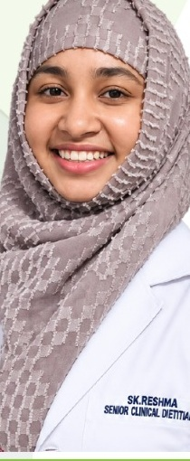

Clinical Foundations
Build confidence with assessment methods, calculations, terminology, lab interpretation and diet planning.
Practical courses, clinical case-sheet training and focused mentorship for nutrition and dietetics students, freshers and professionals.
All classes and courses are led by Dt. Sk. Reshma.

Learn through structured modules, case discussions, calculations, therapeutic diet planning and direct feedback.
Build confidence with assessment methods, calculations, terminology, lab interpretation and diet planning.
Work through renal, diabetic, cardiac, gastrointestinal and other therapeutic nutrition scenarios.
Use structured K-Sheets and case reviews to practise the reasoning expected in clinical dietetics.
Use the navigation above to explore each program and its detailed learning path.
A structured three-phase learning journey with clinical case work, mentorship and a final assessment.
View internship →Explore the modules, practical exercises and one-to-one mentoring approach.
View curriculum →See how K-Sheet based case learning can be used to strengthen clinical decision-making.
View case sheets →All classes, clinical sessions and courses on this website are led by Dt. Sk. Reshma.
The current program is positioned for nutrition and dietetics students, freshers and early-career professionals who want practical clinical skills.
Within the course, K-Sheets are used as structured clinical case documents for assessment, nutrition calculations and therapeutic diet planning practice.
Use the Apply Now button in the header or the application page to submit your details.